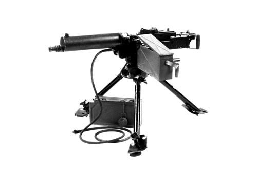

Kulspruta m/36

Konstruktör: John Moses Browning, USA
Tillverkare: bl a Carl Gustafs Stads Gevärsfaktor, Eskilstuna
System: Kort piprekyl, vattenkyld
Kaliber: 8 eller 6,5 mm
Längd: 1357 mm
Vikt: 23 kg. (inkl kylvatten 43 kg)
Riktmedel: Bågklaffsikte och korn samt riktkikare
Magasin: 250-skotts tygband
Skottvidd: 5500 m (8 mm) resp 4500 m (6,5 mm)
Eldhastighet: 750 skott/minut. Praktisk eldhastighet ca 250 skott/minut
Ammunition: 8 mm ptr m/32 eller 6,5 mm ptr m/94 och 6,5 mm ptr m/41
.
.
.
.
.